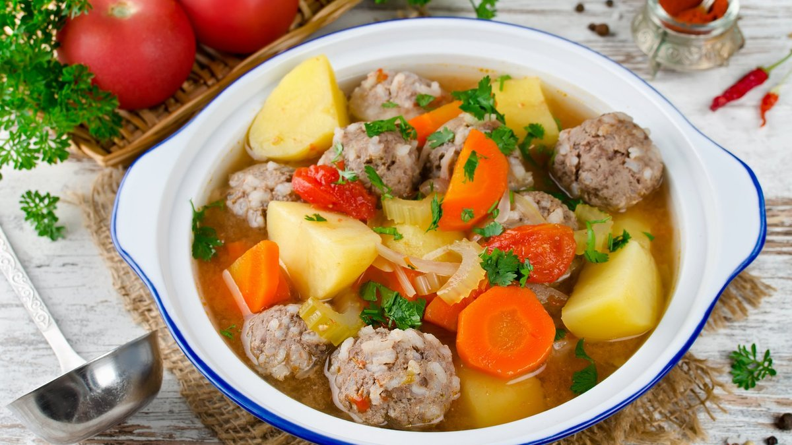

Authentic Latvian Soup: Tradition, Health, and Heart
Authentic recipes are more than just instructions - they are a bridge to the past, preserving the flavors, techniques, and stories of generations.
If you're searching for an authentic Latvian soup experience, you'll find it in the heart of Latvian kitchens. Latvia, nestled in Northern Europe on the shores of the Baltic Sea, is a country steeped in tradition, natural beauty, and culinary heritage. While it may be best known for its picturesque forests and medieval architecture, one of Latvia's most underrated treasures lies in its kitchens - soup. More than just a warm meal, Latvian soups are a cultural phenomenon, blending seasonal ingredients, generational knowledge, and health-conscious practices. Here's why Latvian soups truly stand out from the rest.
1. Rooted in Tradition and Seasonality
Latvian soups reflect the rhythm of nature. With a deep respect for local, seasonal ingredients, traditional soups change with the calendar. In spring, fresh sorrel and nettle soups reintroduce greenery to the diet after a long winter. Summer brings vibrant cold beet soup (aukstā zupa), while fall and winter usher in hearty broths and stews like skābeņu zupa (sorrel soup) or zirņu zupa (pea soup with smoked meats).
This connection to the land and seasons gives Latvian soups a sense of time and place - each bowl tells a story of the climate, the harvest, and the people.
2. Wholesome, Balanced Nutrition
Latvian soups are remarkably nutrient-dense and balanced. They often combine:
- - Root vegetables like carrots, potatoes, and parsnips
- - Protein sources such as smoked pork, beans, peas, or fish
- - Fermented elements like sauerkraut or kefir
- - Fresh herbs and natural spices
These combinations result in meals that are high in fiber, vitamins (especially A, C, and B-complex), and minerals, while remaining low in processed ingredients or excess fats.
Even the beloved aukstā zupa, which is made with kefir, beets, cucumbers, and boiled eggs, offers a powerful dose of probiotics and antioxidants.
3. Deep, Satisfying Flavors
Latvians have mastered the art of layering flavor. Smoked meats, fermented vegetables, and slow-simmered broths give the soups complexity and umami that rival gourmet dishes.
Take frikadeļu zupa, a comforting meatball soup. It's not just meatballs in broth - it's a warm, seasoned hug made with fresh dill, root vegetables, and hand-rolled pork meatballs, often passed down from grandmother to granddaughter.
4. Unique Cold Soups for Hot Summers
Traditional Latvian cold beet soup (aukstā zupa) is a culinary gem. Bright pink and visually stunning, it's cool, refreshing, and probiotic-rich - perfect for hot summer days. With ingredients like kefir, beets, cucumbers, dill, and boiled eggs, it strikes a balance between tangy, savory, and sweet. Arguably, the best soup for hot summer days!

It's not only delicious but also incredibly healthy and hydrating - ideal for digestion and gut health.
5. Passed Down Through Generations
Latvian soup recipes are oral traditions, often passed down from elders who learned them by heart. This adds emotional richness to the meal - you're not just eating food, you're experiencing a piece of Latvian heritage.
It's common for families to gather for a Sunday soup cooked by the eldest member of the household, accompanied by rye bread and stories from the past.
6. Naturally Low Waste & Sustainable
Latvian cuisine prides itself on minimizing food waste. Broths are made from bones, vegetable scraps, or leftover meats. Cold soups make use of preserved ingredients like pickled beets or kefir. This frugal, earth-conscious approach has made Latvian soups sustainable long before it was a global trend.
7. Comfort Food That Heals the Soul
Latvian soups aren't just food - they're comfort, medicine, and ritual. Whether you're fighting off a cold, mourning a loss, or celebrating a family event, there's a soup for every occasion. The warmth of the broth, the aroma of fresh dill, and the simplicity of honest ingredients all provide a deep, satisfying sense of well-being.
Final Thoughts: More Than Just Soup
In Latvia, soup isn't an appetizer. It's a way of life. It's a nourishing, soulful experience that connects the past with the present, the people with the land, and the body with the spirit.
So next time you're looking for a meal that's hearty, healthy, and heartwarming - look no further than a bowl of Latvian soup.